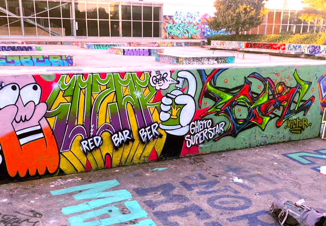
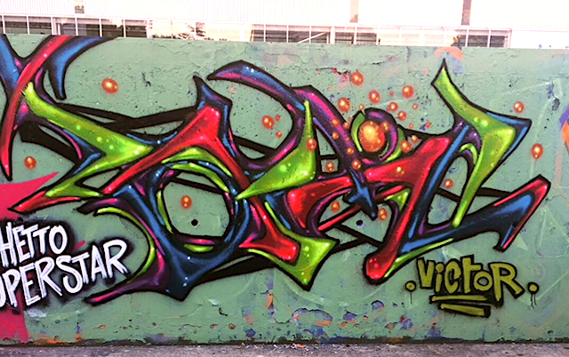
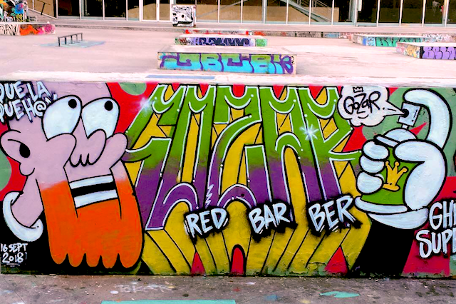

3h au "Hall de glisse", Lille
Publié le 16 du 09 2018
On est arrivé à 16h, on avait donc peu de temps (et pour ma part, peu de couleurs différentes de la dernière fois). Deux styles très différents mais ça donne un rendu assez rigolo ! Pour la prochaine, j’essaye de changer de couleurs ! Une fois de plus avec Gozar.

Rendu final !

Ma partie !

Partie de Gozar !